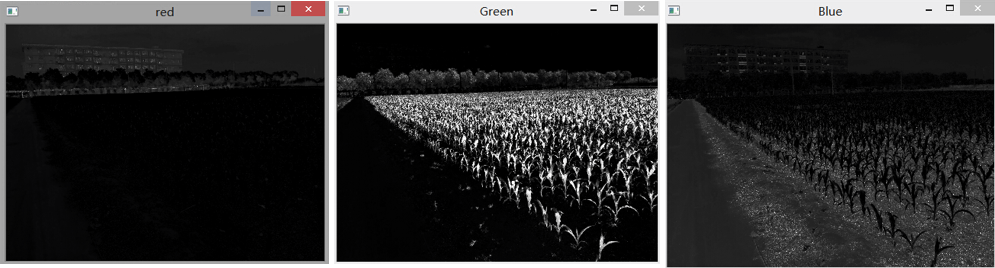
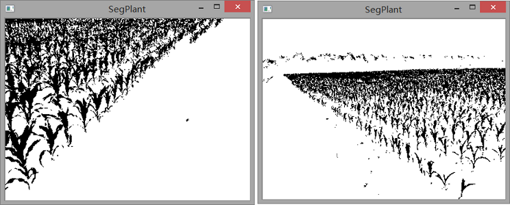
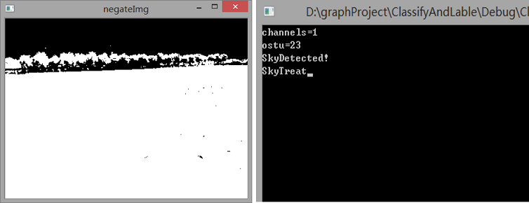
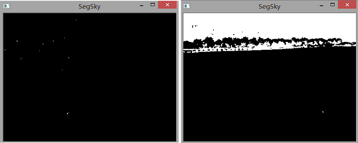
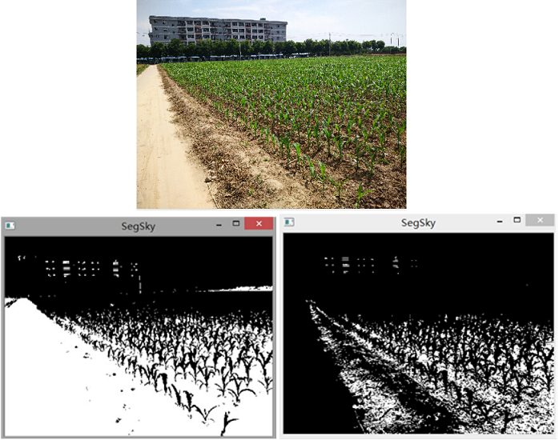
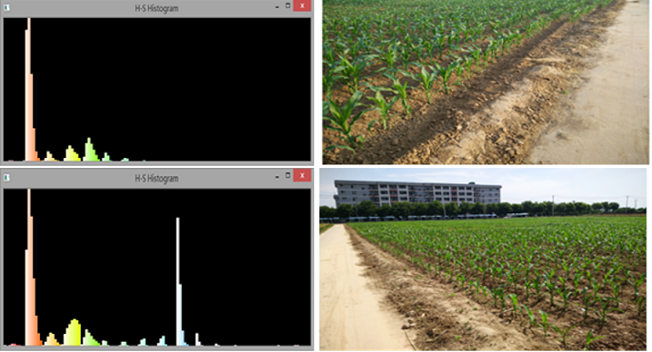
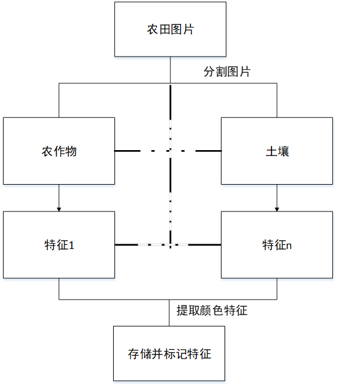
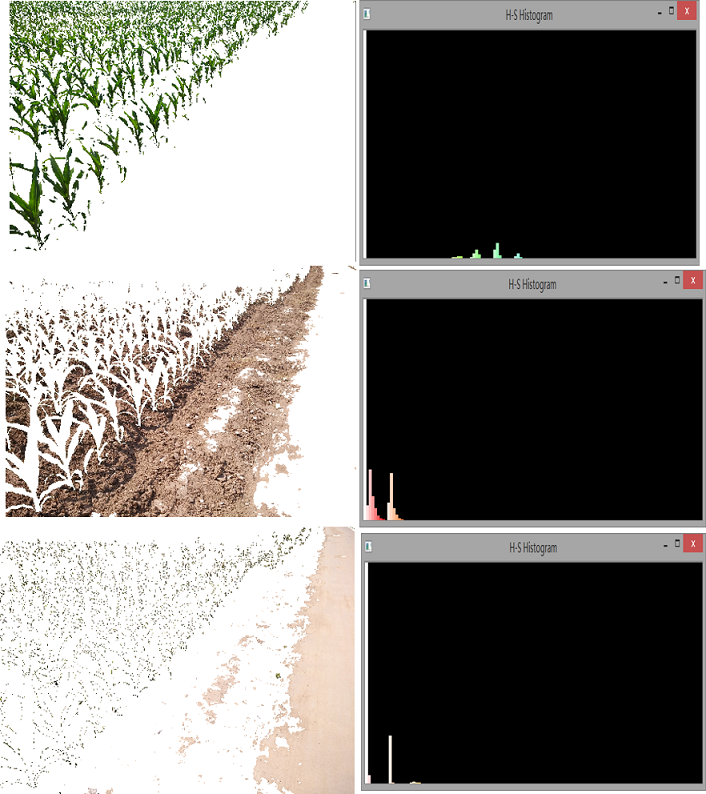
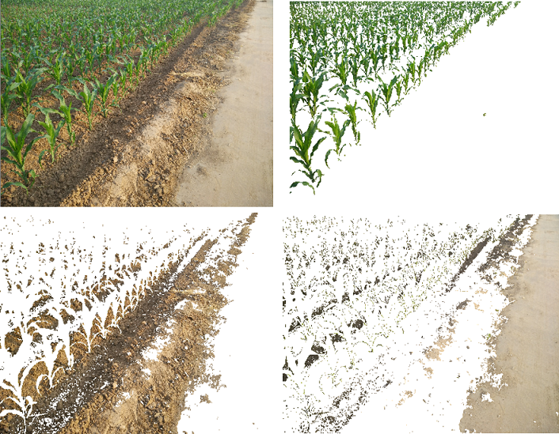
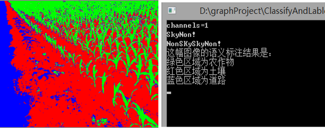

数字图像处理与分析是农业现代化中的一个重要的技术。为实现农田中的对象分类和语义标注，本文首先利用农田中场景不同对象的颜色特征，实现了农田图像的灰度化，以此为基础，分别利用K-means聚类方法结合阈值法，实现了农田图像的分割。然后利用直方图的相似度和颜色特征向量，基于支持向量机SVM分类器， 实现了未知农田图像中对象的分类及语义标注。论文对大田作业场景中智能农机的视觉环境感知的研究具有一定的参考意义。
研究目的与意义
(1)农业现代化与无人机技术发展
(2)农业图像处理在精准农业(Precision Agriculture )方面发展越来越迅速，使用信息技术，把空间的变化，定时，定位定量的实施农业技术操作和管理。可以精准的进行农药投放,利用机器视觉和图像分割技术实现对农田对象的分割和识别，可为定点变量喷洒提供参考。
(2)农业图像处理在精准农业(Precision Agriculture )方面发展越来越迅速，使用信息技术，把空间的变化，定时，定位定量的实施农业技术操作和管理。可以精准的进行农药投放,利用机器视觉和图像分割技术实现对农田对象的分割和识别，可为定点变量喷洒提供参考。
农田图像的获取和预处理
本文以西北农林科技大学北校区试验田的农业试验田为拍摄地点， 拍摄时间为 2015年 5 月 23 日每天中的不同时段不同光照条件下拍摄的 66 张图片, 分辨率为 4208*3120 保存为 sRGB 颜色空间以 JPEG 的格式保存.
农田图像的预处理
农田图像的预处理，对于后续的图像分割，分类以及标注有一定的积极影响。预处理能够消除因为拍摄器材或者其他因素的干扰，可以突出目标的对象信息。颜色空间归一化处理
农田的光照会因为位置因素使获得的照片对于图像分割产生干扰且这种干扰无法完全消除，并且由于玉米植株在光照下产生阴影对土壤分割的影响，为了减少这种干扰，需要将图像进行归一化处理。RGB颜色空间中三个通道共同完成图像的构成，RGB 颜色空间不直观，像素的RGB 值很难反映该值[李先锋等2010]，所代表颜色的认知属性图像的完整显示必须靠这些分量来完成，将RGB值进行归一化处理是去除光照和阴影影响一种简单和有效的方法，其转换公式为 $$r+g+b=1 $$ $$r= \frac{R}{R+G+B} \qquad g= \frac{G}{R+G+B} \qquad b= \frac{B}{R+G+B}$$
农田图像降噪预处理
降噪预处理:图像降噪预处理属于图像增强效果其目的是改善图像的视觉效果或使图像更适合于人或机器分析处理.本部分使用9*9模板大小的中值滤波。中值滤波对脉冲噪声有良好的滤除作用，在滤除噪声的同时，能够保护信号的边缘，使之不被模糊。

农田图像的分割
图像分割(Segmentation)指的是将数字图像细分为多个图像子区域的过程. 常用的分割方法有阈值分割，区域分割，边缘分割，直方图法，聚类分析，模糊集理论，小波变换. 尽管已经提出大量的图像分割算法，但大多是针对具体问题，没有适合所有的图像分割算法。[数字图像处理第三版何东健等] M. Guijarro等人在论文《农田图像的问题自动分割》中提出基于农田图像的超绿因子，超蓝因子,超红因子对农田图像进行灰度化，得到对应的3种灰度图 3类灰度图像分别对绿色植物模块蓝色天空模块和褐色土壤模块具有识别优势，较其他灰度方法识别和分割精度更高。本文采用K-means聚类算法和阈值法来分割出农田中的对象。 由于这些分割对象的颜色成分在三个通道中占有成分是不同的，所以用这一成分作为分割手段的条件。使用三个公式处理彩色图像的三通道。 可以得到农田图像的三种灰度图，分别是极绿因子EXG，极蓝因子EXB，极红因子EXR所取得 $$EXR = 1.4r-g$$ $$EXG = 2g-r-b$$ $$EXB = 1.4b-g$$

K-means聚类分割植物模块
植物模块的分割使用K-means均值聚类算法进行分割，K-means均值聚类算法的原理：K-均值聚类法是一种将图像分割成K个聚类中心的迭代技术。基本步骤如下：
1.首先从n个数据对象任意选择 K 个对象作为初始聚类中心；
2.对于所剩下其它对象，则根据它们与这些聚类中心的相似度，分别将它们分配给与其最相似的（聚类中心所代表的）聚类；
3.然后再计算每个所获新聚类的聚类中心（该聚类中所有对象的均值）；
4.重复第2和3步骤，直至收敛（聚类不再发生变化）。

Otsu阈值法分割天空模块
天空模块的分割：EXB和Otsu法Otsu 法(最大类间方差法、大津算法)使用的是聚类的思想，把图像的灰度数按灰度级分成 2 个部分，使得两个部分之间的灰度值差异最大，每个部分之间的灰度差异最小。方差是灰度分布均匀性的一种度量，方差值越大,说明构成图像的两部分差别越大。

土壤模块的分割模块
天空模块的分割：EXB和Otsu法首先，需要判断所分割的图片是否包含天空，对于包含天空和不包含天空的图片，应该使用不同组合方法，为此利用EXR和Otsu阈值法且阈值为32时作为判断一副图片是否存在天空。做如下展示 左图为无天空的阈值法结果右图为有天空的阈值法结果

判别出天空以后，如果没有天空，分别使用Otsu阈值法和K均值聚类法对别分割土壤的效果，发现这两种方法的效果几乎没有差别。如果有天空，要去掉天空和植物，才可以获得土壤.
还可以对地面进行进一步分割，产生土壤模块和水泥地面模块，由于这两个模块在EXR中的表现随着阈值表现不同。所以很容易分割出这两个模块。

农田对象分类方法
文章使用SVM分类方法和直方图特征对比法两种不同方法进行分类。SVM分类方法适合于大量数据的分类，而直方图特征对比法适用于比较少量的数据分类。图像分类包括图像样本的获取过程，图像特征提取过程和图像分类的过程。特征提取是指为了保证分类器能够正常工作，需要对样本图像进行一些变换，并按某种准则选用对正确分类识别有作用的信息。而图像的分类通常包含了训练分类器和使用分类器进行分类的过程。
方法一：图像空间的分类方法—利用图像的灰度,颜色,纹理,形状,位置等底层特征对图像进行分类;例如:
[1]利用灰度直方图特征对图像进行分类.
[2]利用纹理特征对图像进行分类.
[3]采用纹理,边缘和颜色直方图混合特征对图像进行分类.
[1],[2],[3]均采用SVM作为分类器.
[4]用矩阵表示图像,矩阵元素是相应象素的灰度值,然后用SVD和PCA方法抽取图像特征,BP神经网络作为分类器.图像空间的分类方法的共同缺点是数据量大,计算复杂性高,但分类精度一般比较理想.
方法二 特征空间的分类方法—首先将原图像经过某种变换如K-L变换,小波变换等变换到特征空间,然后在特征空间提取图像的高层特征以实现图像的分类.这类分类方法尤以纹理图像分类和遥感图像分类最多.以下是常见的纹理分类方法,基本上都用到了高波过滤器。
[1]Support vector machine classifier Gabor filters and wavelet transform.
[2]Multiple neural network classifiers Gabor filters.
[3]Bayesian network classifier Gabor filters and Statistical features.
[4]Support vector machine classifier Gabor filters.
特征空间的分类方法可降低数据维数,降低计算复杂性,但问题相关性较强,与特征提取的方法和效果有很大关系
[1]利用灰度直方图特征对图像进行分类.
[2]利用纹理特征对图像进行分类.
[3]采用纹理,边缘和颜色直方图混合特征对图像进行分类.
[1],[2],[3]均采用SVM作为分类器.
[4]用矩阵表示图像,矩阵元素是相应象素的灰度值,然后用SVD和PCA方法抽取图像特征,BP神经网络作为分类器.图像空间的分类方法的共同缺点是数据量大,计算复杂性高,但分类精度一般比较理想.
方法二 特征空间的分类方法—首先将原图像经过某种变换如K-L变换,小波变换等变换到特征空间,然后在特征空间提取图像的高层特征以实现图像的分类.这类分类方法尤以纹理图像分类和遥感图像分类最多.以下是常见的纹理分类方法,基本上都用到了高波过滤器。
[1]Support vector machine classifier Gabor filters and wavelet transform.
[2]Multiple neural network classifiers Gabor filters.
[3]Bayesian network classifier Gabor filters and Statistical features.
[4]Support vector machine classifier Gabor filters.
特征空间的分类方法可降低数据维数,降低计算复杂性,但问题相关性较强,与特征提取的方法和效果有很大关系
第二种方法-SVM分类。支持向量机 (SVM) 是一个类分类器，正式的定义是一个能够将不同类样本在样本空间分隔的超平面。 换句话说，给定一些标记(label)好的训练样本 (监督式学习), SVM算法输出一个最优化的分隔超平面。
使用SVM之前需要训练SVM，使用颜色特征向量来训练，训练好的SVM就可以对输入的特征向量做预测并回应出相应的标号。颜色可以使用三维向量表示，为[r g b]
其中各个元素的取值在0到1之间r为红色，g为绿色,b为蓝色，它和我常用的使用256表示的颜色是一一对应的。红色：[1 ,0, 0]绿色：[0 ,1, 0] 蓝色：[0 ,0 ,1]。特征向量是指能够代表该事物的一类向量。一个3通道的像素点可以表示为[R,G,B]。由于光照和阴影的影响同一类对象的[R,G,B]会不同，因此需要公式1.1来归一化处理掉干扰因素。
然后就可以得到一个像素点的特征向量[r,g,b]同一类事物的特征向量基本都是一样的。利用极限思想，从一个像素点到一个分割好的区域，求出这个区域的每个像素点的特征向量，然后取平均值，可以近似的认为，这个区域的特征向量被求出来了。然而这还不能使用SVM进行分类，我们必须使用整形数字来表示每个特征，可以把每个特征向量划分到红色：[1 ,0, 0]绿色：[0 ,1, 0] 蓝色：[0 ,0 ,1]中，并设置lable,这样问题就变为了3维3分类问题。提取出数据集中不同区域的特征向量（需要划分），用这些向量训练SVM，然后，对一副未知的农田图像分割成未知的几个区域，提取特征向量并且划分，然后预测出这些向量属于那一类。这样就会收到回应lable，因此完成了对未知农田图像的自动划分。



农田对象语义标注研究
常用的语义标注方法大体可以分为两种:词一图关系建模方法和分类方法"前者如TranSlation模型和LDA模型,后者如ALIP和CBSA。 先对图像分割处理，然后使用任意一种的方法提取特征，使用特征分类，或者训练SVM用来分类。这样就知道要预测的图片那个区域是属于哪一类。首先分割效果如下。

本部分为对不同区域进行语义标注如图
